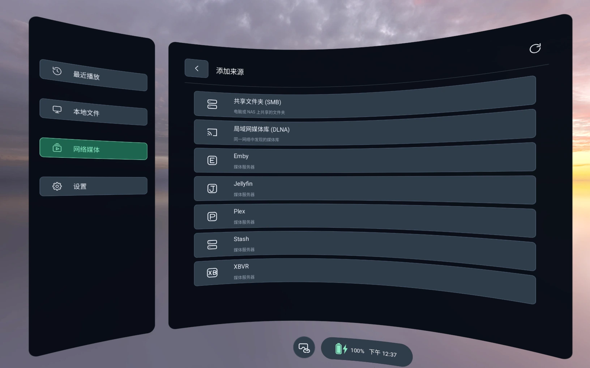
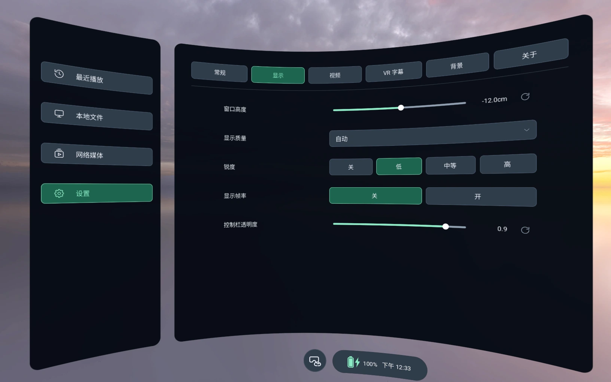
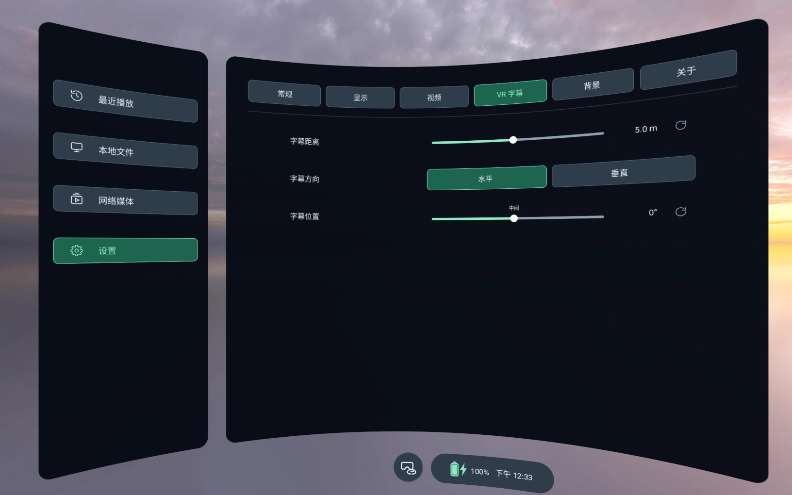

平面
普通影片，在虚拟巨幕上观看
Immivio 是一款专为 3D 与沉浸式视频打造的免费 VR 播放器。左右 3D、上下 3D、VR180 和 360° 视频，无论存在头显、NAS 还是媒体服务器上，都能在巨幕或环绕画面中观看。
实际截图：Immivio 0.9.6 播放 VR180 左右格式示例视频（Android 模拟器，2D 画面）。
选择与片源匹配的投影方式和立体格式。无论是平面巨幕、半球还是全景球面，左右眼画面都完整呈现。
普通影片，在虚拟巨幕上观看
全宽与半宽 SBS
全高与半高 TB
180° 视频，单眼或立体
360° 全景视频
180° 鱼眼，含左右格式
基于 libmpv 的硬件加速播放 · 支持 SRT、ASS、SSA、VTT 文字字幕
打开头显或 U 盘里的视频，也可以连接家里已经在运行的服务器。所有网络来源都集中在“网络媒体”一个入口。

把画面放在你想要的位置，调成你想要的大小。下次打开时，Immivio 会记住这些设置。

文字字幕在独立图层中渲染，无论平面巨幕还是沉浸画面，都清晰易读。

倍速、字幕、调色、音画同步、双眼对齐和播放队列，都在一个小窗里。
顺序或随机播放，最后一个视频结束后回到原文件夹。
按文件记住播放进度、音轨字幕、双眼对齐和画面布局。
可交换左右眼并微调水平对齐，直到 3D 效果看起来正确。
原始、暖色、冷色或自定义，每个滑块都能单独重置。
简体中文、繁体中文、英文和日文。
你的影片、观看记录和登录信息只保存在头显上，或只发送给你自己连接的服务器。源代码公开，任何人都可以检查。
选择你的头显，获取对应的安装包。无需购买，也无需订阅。
在头显上开启开发者模式，用 USB 连接电脑并允许调试。
使用任意侧载工具安装。发布页里的源代码 ZIP/TAR 压缩包不是应用。
在头显应用库的未知来源中找到它。PICO：资源库 → 未知来源。
实际表现取决于头显、编码、码率和分辨率。OpenXR 版本需要兼容的 Android 运行时。 完整安装指南 →
是的。Immivio 可以免费下载、使用和构建，无需购买或订阅。源代码以 GPL-3.0 许可证发布在 GitHub 上。第三方媒体服务按其自身条款提供。
PICO（Neo3 及更新机型）和 Meta Quest（Quest 2 及更新机型）各有独立的安装包。另有实验性的 OpenXR 版本，面向其他具备兼容 OpenXR 运行时的 Android 头显。
先检查投影方式（平面、180°、鱼眼或 360°），再检查立体格式（单眼、左右或上下），最后尝试交换左右眼。VR180 左右鱼眼视频请选择“鱼眼 + 左右”。查看格式对照表 →
支持平面、180°、360° 和鱼眼视频，单眼或左右、上下立体格式，包括半宽和半高格式。字幕需为文字格式（SRT、ASS、SSA 或 VTT），不支持图形字幕。MV-HEVC 和杜比视界色彩准确性尚未验证。
这取决于编码、码率、投影方式和头显性能。如果播放卡顿，可以先试试同一影片的较低码率版本。
只有应用 ID 和签名密钥都一致时才能覆盖安装。其他渠道分发的版本以及部分 CI 构建使用不同的密钥，彼此之间无法覆盖更新。
Immivio 延续自 zerochocobo/Thru3D-Media-Player 0.6.0 版本，此后由 NorthBoundWisdom 独立开发和发布。Immivio 的问题请在本项目仓库中反馈。